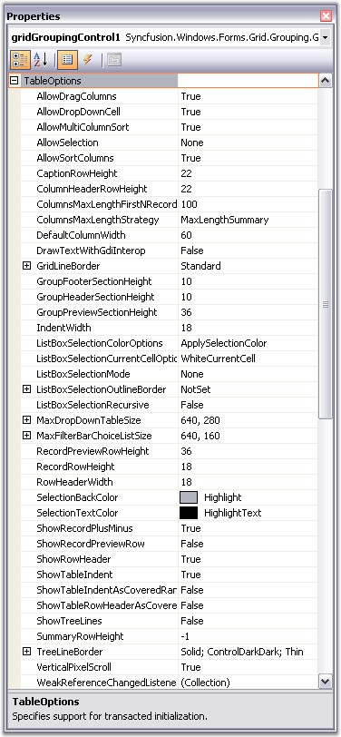
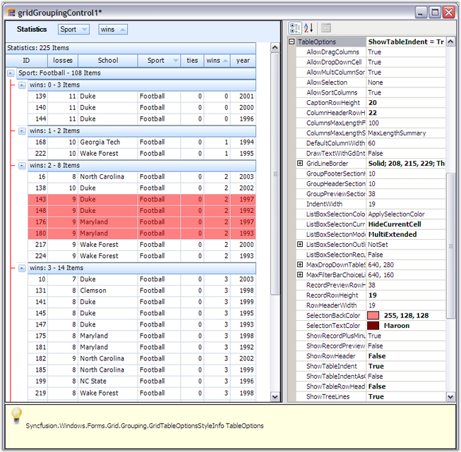

TableOptions lets you set various properties that will affect the look and behavior of a grouping grid across all groups and child groups. Properties such as the default height of a Caption Row, GroupHeader / Footer, PreviewRow or whether TreeLines are visible between the PlusMinus cells are controlled by this property. Here is a screen shot that shows the list of properties you can set under TableOptions.

Figure 338: TableOptions Properties
Below table gives a brief description on the above properties.
|
TableOptions Property |
Description |
|
AllowDragColumns |
Allows the user to re-arrange columns by dragging the headers. |
|
AllowDropDownCell |
Decides whether combo boxes are displayed for foreign key reference columns. |
|
AllowSelection |
Defines the selection behavior. Set it to none to use record selections. |
|
AllowSortColumns |
Allows user to sort the columns by clicking the column header. |
|
AllowMultiColumnSort |
Allows user to sort the table by multiple columns. |
|
CaptionRowHeight |
Displays height of caption rows in pixels. |
|
ColumnHeaderRowHeight |
Displays height of column header rows in pixels. |
|
ColumnsMaxLengthFirstNRecords |
Number of rows to be evaluated for GridColumnsMaxLengthStrategy.FirstNRecords. |
|
ColumnsMaxLengthStrategy |
Defines strategy for re sizing columns to optimal width. |
|
DefaultColumnWidth |
Default width for columns. |
|
DrawTextWithGdiInterop |
Specifies whether the text should be drawn using GDI interop routines. |
|
GridLineBorder |
Controls the style of the lines used to draw grid lines. |
|
GridVisualStyles |
Specifies the skin for the grid. |
|
GroupFooterSectionHeight |
Displays height of group footers in pixels. |
|
GroupHeaderSectionHeight |
Displays height of group headers in pixels. |
|
GroupPreviewSectionHeight |
Displays height of group previews in pixels. |
|
IndentWidth |
Displays width of the indentation of each child group in pixels. |
|
ListBoxSelectionColor Option |
Controls the appearance of selected cells. |
|
ListBoxSelectionCurrentCell Options |
Controls the appearance and behavior of the current cell when the ListBoxSelectionMode is set. |
|
ListBoxSelectionMode |
Enables list box-type selection behavior when the user moves the current cell. |
|
MaxDropDownTableSize |
Maximum size for the dropdown table associated with foreign keys. |
|
RecordPreviewRowHeight |
Displays height of the record previews in pixels. |
|
RecordRowHeight |
Displays height of the record rows in pixels. |
|
RowHeaderWidth |
Displays width of the row header cells in pixels. |
|
SelectionBackColor |
Sets background color for selected records. |
|
SelectionTextColor |
Sets text color for selected records. |
|
ShowRecordPlusMinus |
Indicates whether a PlusMinus cell should appear next to the records; only applicable for nested tables. |
|
ShowRecordPreviewRow |
Indicates whether a nested table has a preview row; only applicable for nested tables. |
|
ShowRowHeader |
Indicates whether the row header column should be visible. |
|
ShowTableIndent |
Indicates whether children of the records in the parent table should be indented; only applicable for nested tables. |
|
ShowTableIndentAsCoveredRange |
Indicates whether the cells in a particular indent level are treated as a single covered cell; only applicable for nested tables. |
|
ShowTableRowHeaderAsCoveredRange |
Indicates whether the row header cells for a particular nested table are treated as a single covered cell; only applicable for nested tables. |
|
ShowTreeLines |
Indicates whether the PlusMinus cells are shown connected with lines. |
|
SummaryRowHeight |
Height in pixels of the summary rows. The value -1 is a special setting to indicate that the summary row height should always be the same as the RecordRowHeight. |
|
TreeLineBorder |
Controls the style of the line that is used to draw the tree lines. |
In the Preview, try various property settings to see their effect on the display. Below is a sample of what you might see. The properties changed here are CaptionRowHeight, ColumnHeaderRowHeight, GridLineBorder, GridVisualStyles, ListBoxSelectionMode, SelectionBackColor, SelectionTextColor and ShowTreeLines.

Figure 339: Customized Groups and Child Groups of Grid Grouping Control
 Note: For more details, refer the following
browser sample:
Note: For more details, refer the following
browser sample:
<Install Location>\Syncfusion\EssentialStudio\[Version Number]\Windows\Grid.Grouping.Windows\Samples\2.0\Grouping Grid Options\Table Options Demo